头发
头发工具：分组、参数、骨骼和叠层
标题栏是 Hair Test* - VRoidStudio 0.11.3，英文界面，约 27 分钟。星号是这一份还没保存。同一套校服模型上把头发编辑器过一遍：描边、分组、四件工具、颜色和贴图、截面曲线、骨骼，再叠成双马尾。滑杆数字只写画面上读得到的。口播提到、画面没打开的菜单会标明。
先把描边收到 0
头发、脸、身体的 Width
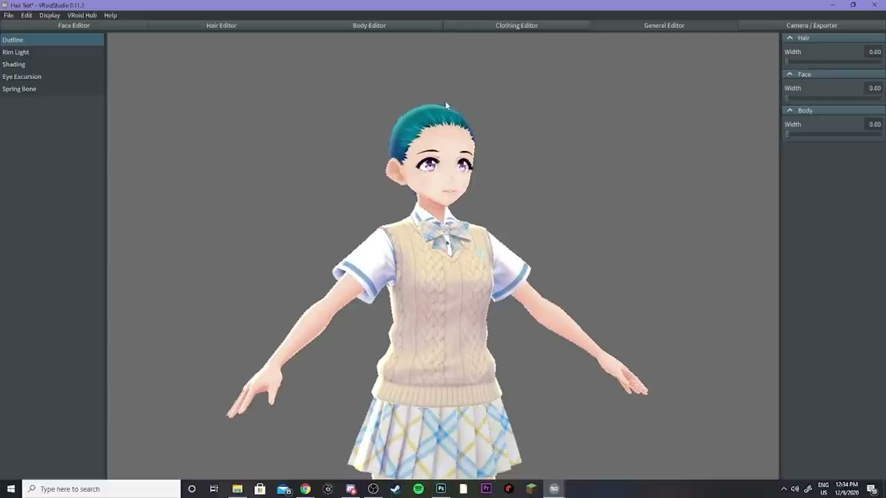
进头发之前先到 General Editor 的 Outline。Hair 的 Width 先收到最左，读数 0.00；紧接着 Face、Body 也收到 0.00。口播说这样 VRoid 的描边线不会压在头发上，发束边缘是什么样看得清楚。左侧还能看到 Rim Light、Shading、Eye Excursion、Spring Bone，这一段没去动。
分组
藏起 Base Hair
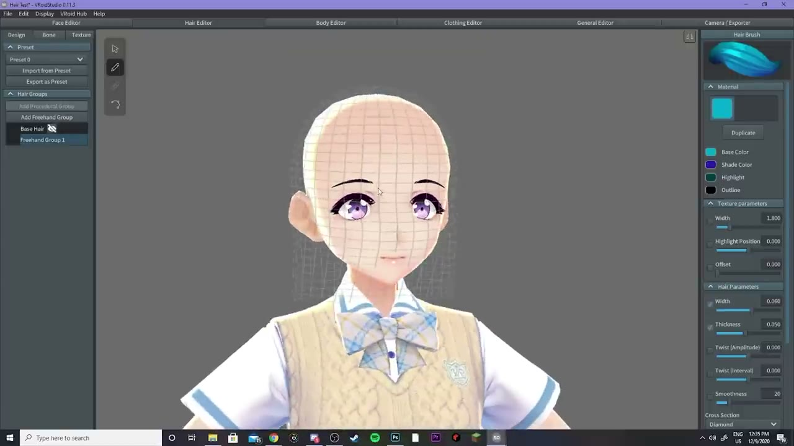
顶部切到 Hair Editor，子页是 Design、Bone、Texture。Design 左上是 Preset，现在停在 Preset 0，下面两个按钮是 Import from Preset 和 Export as Preset。口播说可以从 Booth 把别人的头发导进来，做好也能导出，画面上没有真的执行导入导出。
Hair Groups 里有 Add Procedural Group 和 Add Freehand Group。这支视频没有展开程序化组，后面画的都是 Freehand。Base Hair 是头皮那一层，点它旁边的眼睛，图标被划掉，头顶变成光头线框。口播说女头头发缝里透头皮、或者要做光头和头皮纹身时，就靠这个开关拿掉。
手绘组叠在头皮上
点 Add Freehand Group 会多出一组。在这一组里用笔刷画下去的几笔，列表里是同一组下的 Hair。再点一次 Add Freehand Group，新的一笔画在上一组上面，两组可以分开选、分开藏。先在头皮上铺一层，刘海、侧发、后发再各开一组，后面拆成品时就是这个结构。
四件工具和镜像
Select 看黄边和绿点
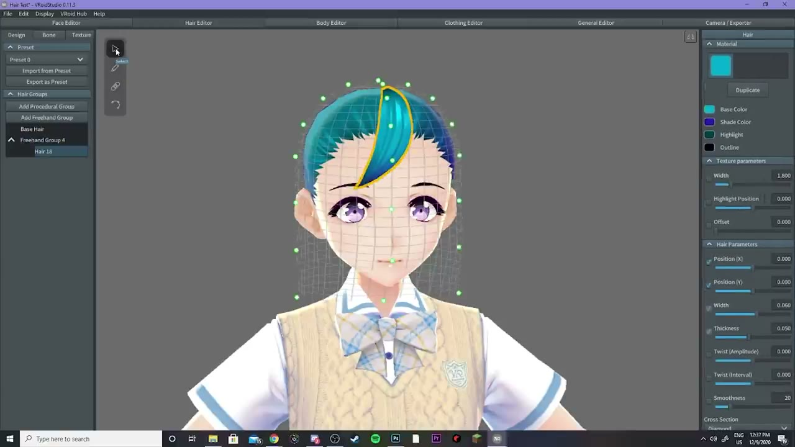
工具条从上到下四项。Select 点中一束后，这束套上黄边，头周围和发束上出现绿点，用来选中再挪。这一帧选中的是 Freehand Group 4 里的 Hair 18，一缕斜刘海。右侧同时露出后面要用的整列参数，先记住默认读数：贴图 Width 1.800，Highlight Position 和 Offset 都是 0.000；发束 Width 0.060，Thickness 0.050，两个 Twist 都是 0.000，Smoothness 20，Cross Section 是 Diamond。滑杆左边有勾，勾上才作用到当前这束。
Retouch 拖轮廓
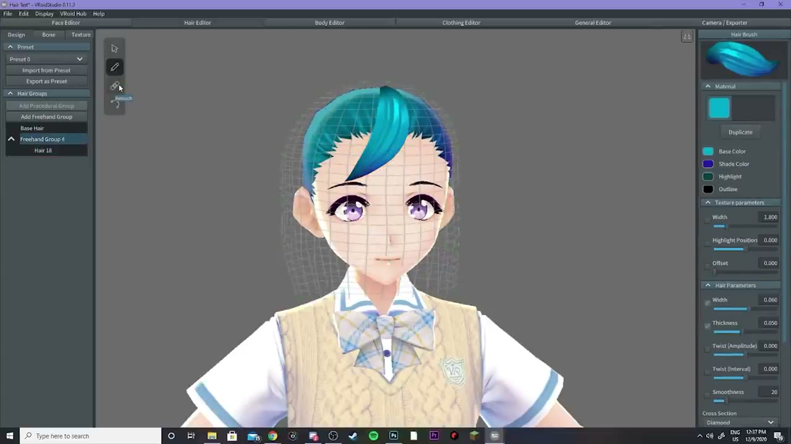
第二项铅笔是 Brush，按住在头上拖就长出一束，画完挂进当前手绘组。第三项悬停写着 Retouch。切过去之后右侧参数栏会收起来，黄边还在，拖它是在改这一束的外轮廓。口播说自己很少用 Retouch，觉得别的办法能绕开。
控制点改走向
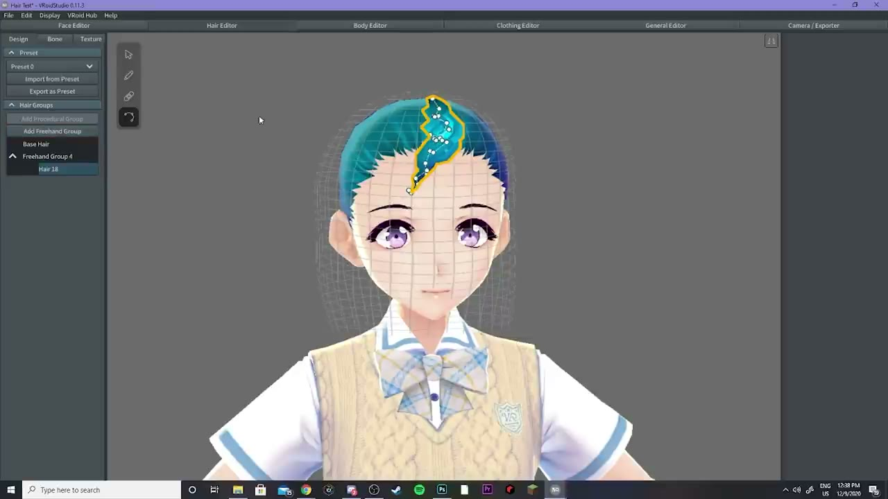
最下面的弯箭头是控制点。较早悬停时提示写着 Control Points。打开后黄边里面变成一串白点，拖点能把这一束掰弯、拉长或改朝向。口播说发束朝向别扭、又不想整束挪走时，就改这些点。
镜像
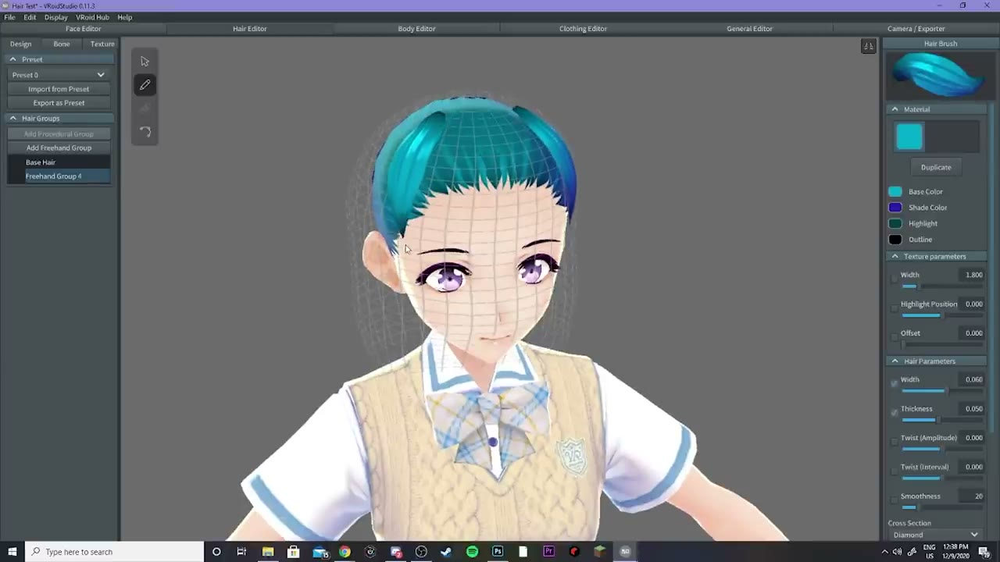
口播把视口右上角、Hair Brush 标题左边那个左右对指的小图标叫 mirror option。打开之后只在一边下笔，另一边跟着长。这一帧头两侧各多了一小簇，中间的头发还是原来的短盖。做对称双马尾或两边一样的鬓发时先开它，不对称的刘海就关掉。
颜色和贴图铺在发束上
底色、阴影、高光、描边
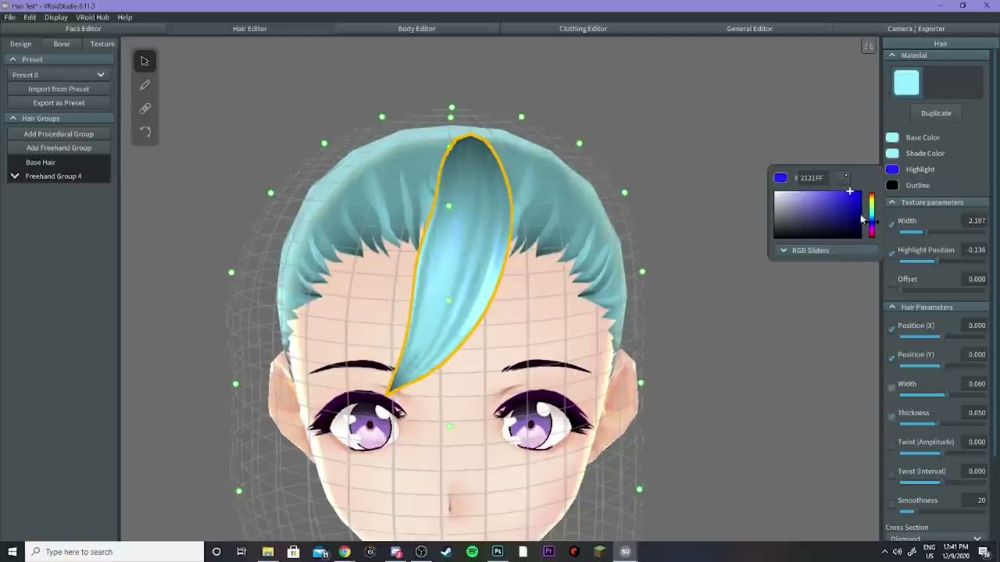
Hair Brush 下面是 Material：一大块色，一个 Duplicate，然后四个色点 Base Color、Shade Color、Highlight、Outline。先把 Base Color 点成浅青，Shade Color 收成同一种浅青，阴影就不会把发束切成深一块浅一块。高光会在发束上拉出一条浅纹；口播演示过把它改成别的颜色，再点成黑色，浅纹就消失，画的时候不容易被干扰。Outline 保持黑色。描边宽已经在 General Editor 里收到 0，这里的 Outline 色只有把描边宽再打开才会显出来。
贴图的宽、位置和偏移
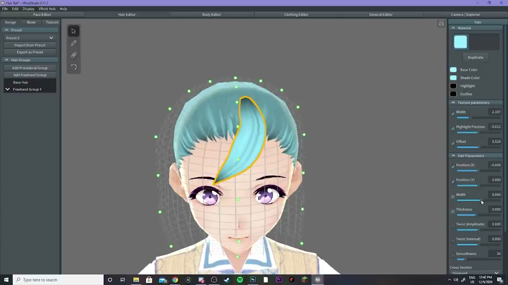
Texture parameters 管的是贴图怎么贴到这一束上，不是发束本身的粗细。Width 从默认 1.800 拉到 2.197，贴图在束上拉得更开。Highlight Position 略向左，这一帧是 -0.012，浅纹顺着发束上下挪。Offset 拉到 0.519，口播说贴图会绕着发束转，连背面也会跟着拧。三项左边的勾都是开的。
发束的形状
宽度、厚度和扭转
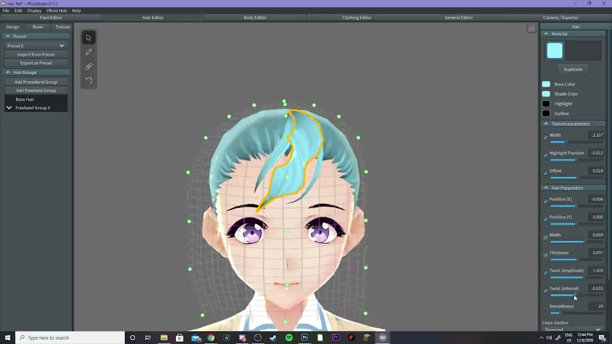
Hair Parameters 里的 Width 是这一束有多宽，Thickness 是从根到梢鼓不鼓。口播建议整头不要只用一种宽度：先留中等的，再在旁边加很细的。Thickness 她说拉高会鼓成一团，拉到底接近一根丝，自己通常留在中间。这一段画面上 Width 先停在 0.060，Thickness 停在 0.050；后面平滑拉高时变成 Width 0.069、Thickness 0.057。
Position (X) 把发束在头上转圈挪，Position (Y) 上下挪。口播说微调时比拖控制点省事。这一帧 X 只到 -0.006，几乎没离开原位。Twist (Amplitude) 拉到 1.426，刘海拧成岔开的两股；Twist (Interval) 停在 0 附近，画面读数约 -0.015，口播说它改的是扭转的疏密。她平时不做明显卷发，小卷只用在耳侧增加一点厚度。口播接着把两个 Twist 打回 0，后面的帧里两项又是 0.000。
截面
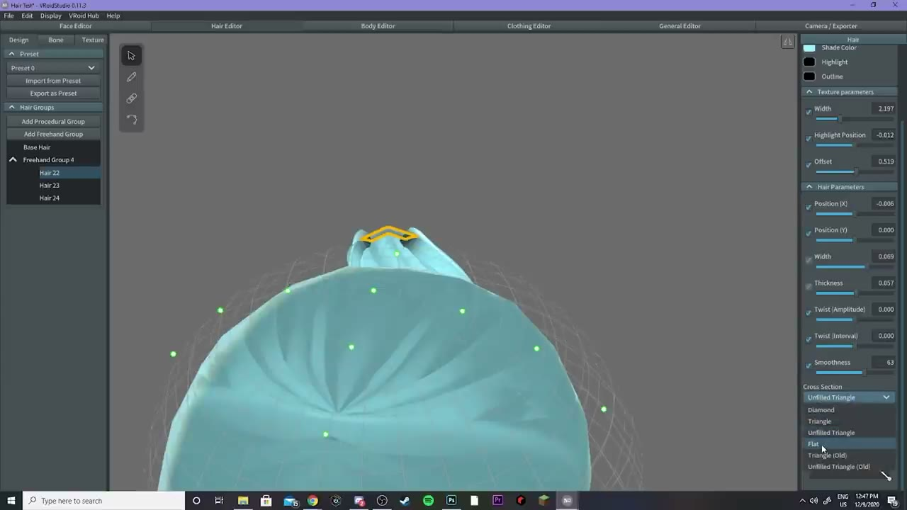
Smoothness 从 20 拉到 63，口播说越平滑，发束转折越少，棱角会被抹掉。Cross Section 决定从断面看是什么形。下拉打开时当前是 Unfilled Triangle，列表里还有 Diamond、Triangle、Flat、Triangle (Old)、Unfilled Triangle (Old)。从正上方看，这一束摊成一扇。口播说 Old 的两种可以不管，自己固定用 Diamond，觉得最饱满。后面调曲线时，截面已经回到 Diamond。
曲线
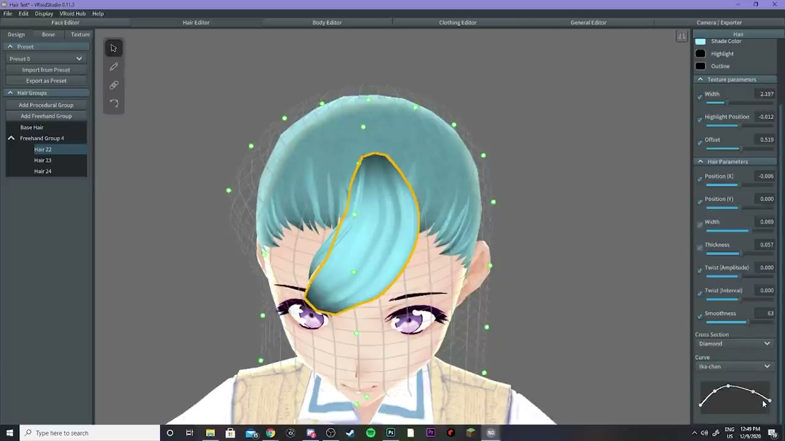
Curve 决定发束从根到梢怎么弯。下拉里画面能确认的是 Fluffy、Straight 和 Ika-chan。口播还提到一种更圆的 squid，这一段没有打开那个选项。Fluffy 是她用得最多的，右下角的图是一道拱。Straight 把拱拉平，口播说刘海和后脑要齐边时用它，旁边再夹几根更细的，看起来钝、但还有层次；当时画面上叠了一张写着 Example 的齐发后脑。Ika-chan 拱得更高，这一缕刘海弯成盖住眼睛的环。图上的白线就是当前曲线，拖上面的点能改弯曲。口播说线的下端是收尖的梢，上端更开。做完演示她又把 Curve 拨回 Fluffy。
收成能开关的组
改名，并做出对称刘海
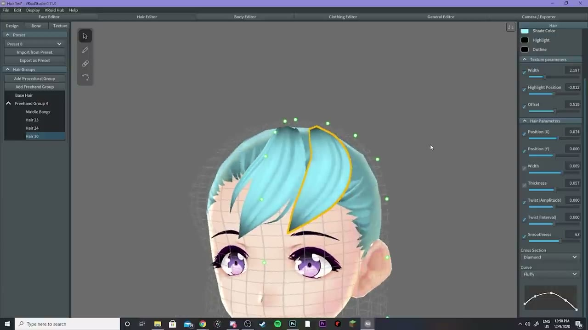
组名可以直接改。这一缕从默认的 Hair 编号改成了 Middle Bangs，眼睛图标还在名字旁边，和藏 Base Hair 是同一个开关。口播说在组上右键可以平滑、复制、翻转和删除，菜单本身这一帧没展开。画面上的结果是左右各一缕刘海，选中的右侧那根 Position (X) 为 0.074，Curve 回到 Fluffy，右下角的拱也回到比较对称的形状。复制之后用翻转或 Position (X) 把副本推到另一侧，就不用重新画一遍。
细束铺成短发
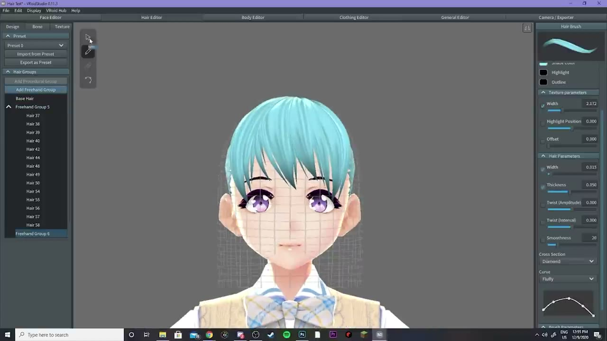
短发不是一根粗发片盖住头。Freehand Group 5 里排着 Hair 37 到 Hair 58 很多根，下面还有 Freehand Group 6。当前这束的 Width 是 0.015，比前面刘海的 0.060 细很多，Hair Brush 的预览也变成一条细弧。口播反复说宽度要混用，整头才不会像一把同样粗的梳子。贴图 Width 这时是 2.172，Curve 仍是 Fluffy，截面是 Diamond。
后脑一根一根改
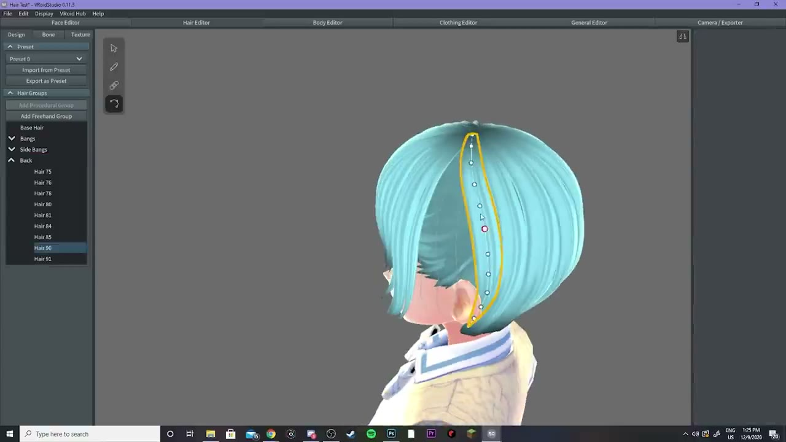
短发铺完后，组被改成 Bangs、Side Bangs、Back。Back 展开是 Hair 75 往后的一串。用控制点选中后脑正中的一根，黄边里有白点，其中一个点是粉的，表示正在拖。把后脑从中间向两侧排开，齐发的外轮廓还在，里面已经不是一块板。
点中整个 Freehand Group、而不是里面的某一束时，右侧标题变成 Freehand Group，Width 和 Thickness 换成 Width Scale、Thickness Scale。曾看到两项都是 1.000，等于整组一起缩放，不改每根自己的粗细。
骨骼
色块代表不同的骨组
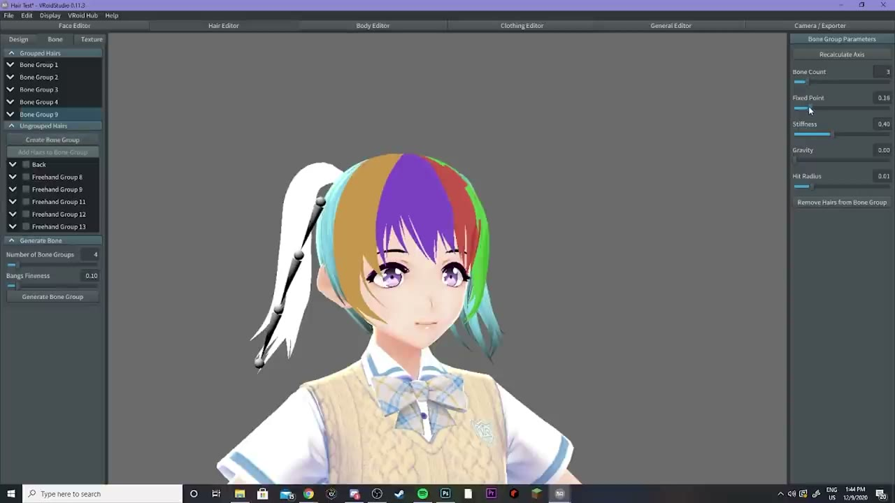
Bone 页分三块。Grouped Hairs 下列出已经进组的 Bone Group。Ungrouped Hairs 里是还没分配的组，按钮是 Create Bone Group 和 Add Hairs to Bone Group。再往下 Generate Bone：Number of Bone Groups 和 Bangs Fineness，然后 Generate Bone Group。
短发阶段她先自动生成过一次，Number of Bone Groups 到过 14，Bangs Fineness 是 0.10。口播说自动生成最省事，自己不太喜欢分太碎的骨组。做到双马尾之后，这一帧 Number of Bone Groups 是 4，Bangs Fineness 仍是 0.10。头上的发被涂成黄、紫、红、绿、青几块，一块一种颜色就是一簇一起动的骨头。左侧白色马尾上能看见一串骨点。Grouped Hairs 里有 Bone Group 1 到 4，还有 Bone Group 9；Back 和好几组 Freehand 还留在 Ungrouped Hairs。
选中一个骨组后，右边是 Bone Group Parameters。这一帧 Bone Count 是 3，Fixed Point 0.16，光标就在这根滑杆上。口播说 Fixed Point 是头发开始摆动的位置，往头顶收，避免整条头发乱甩。Stiffness 拉到 0.40，用来压住晃的幅度。Gravity 是 0.00，Hit Radius 是 0.01。上面有 Recalculate Axis，下面有 Remove Hairs from Bone Group。
用跑步看晃不晃
测物理不在 Hair Editor 里。切到 Camera / Exporter → Pose & Animation，上面是 Female Animation，列表里有 Walking 和 Running，底下是 Capture 和 Stop。短发和后来的双马尾都用 Running 看过。口播说走路是轻轻一弹，跑步晃得更明显；她不满意就把骨组删掉重来。静止的一帧看不出摆动，要看的是动画播放时马尾和刘海是不是整块一起甩。
双马尾是一层层加出来的
先围住后脑，再往外加组
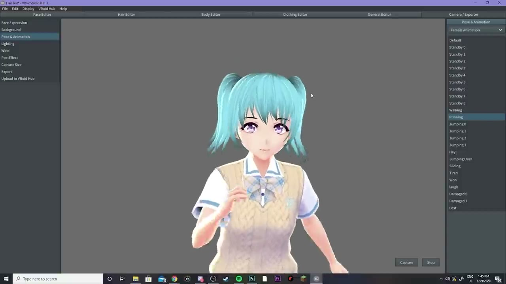
双马尾不是从光头重新画。口播说先让头发绕过后脑，再从已有的那组出发：Add Freehand Group 会按当前组的形状复制出新组，新组可以单独把尾端往外弯。做的时候组列表里已经有 Bangs、Side Bangs、Back，然后能看到 Freehand Group 8、9，以及 11 到 13。后脑先出现两个小环，再把环拉长、在里面填更细的束，外面再罩一层差不多深、但轮廓更大的组。画的时候把右侧拉到 Brush Parameters，Sampling Interval 读数是 0.02。单束 Width 见过 0.018 和 0.028，比短发那层 0.015 的细束略宽；Thickness 见过 0.053 和 0.063。Curve 仍是 Fluffy，截面是 Diamond。
这一帧就是叠完、骨骼也设过之后的跑步。两侧马尾分开垂着，不再是齐耳的盖发。口播觉得这个长度的摆动刚刚好。
默认贴图太「一眼 VRoid」
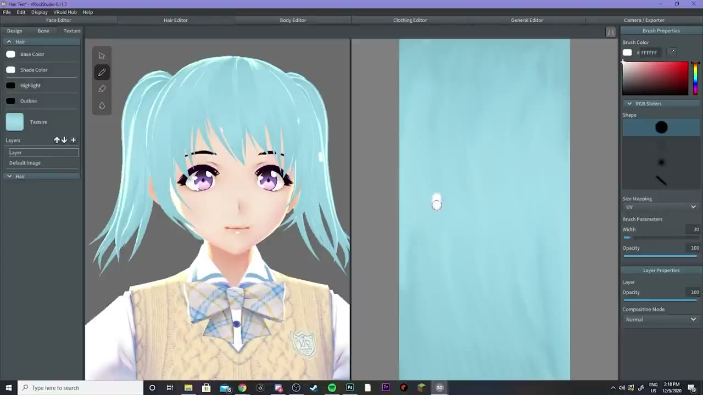
口播说默认头发贴图一眼能看出是 VRoid，要么去 Booth 换一张，要么自己画。这一帧没离开软件，开的是头发编辑器的 Texture 页。左边勾着 Base Color、Shade Color、Highlight、Outline，下面是 Texture 色块和 Layers，图层里有 Default Image。中间竖条就是贴图本身，还是一片浅青。右边 Brush Color 是白，Shape 是圆笔，Size Mapping 选的 UV，笔宽 30，不透明度 100，图层不透明度 100，Composition Mode 是 Normal。口播说下一步会打开 Photoshop，画面上没有切出去。
高光只做在单独一束上
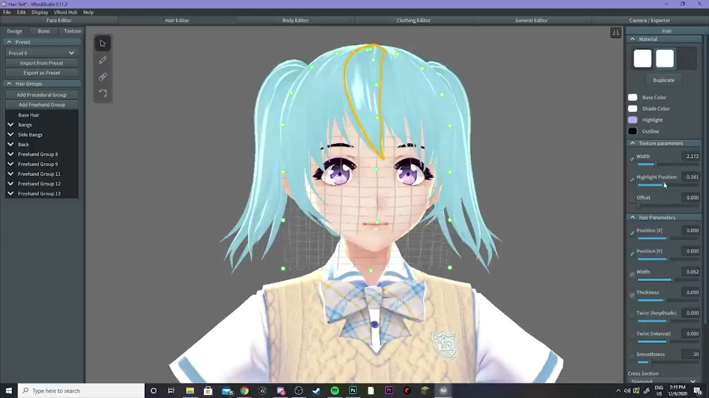
不想把高光画进整张贴图时，可以复制一根发束，只改这一根的 Highlight。这一帧正中有一根被黄边套住的束，Highlight 色是浅的，不再是刚才用来消纹的黑。Highlight Position 拉到 -0.161，光标在这根滑杆上，浅纹沿着这一束上下移。其余头发保持没有那条纹。贴图 Width 是 2.172，这根的 Width 是 0.062，Thickness 是 0.050。这样高光只出现在想强调的几束上。
成品拆开看
白发靠很多组，耳朵也是头发
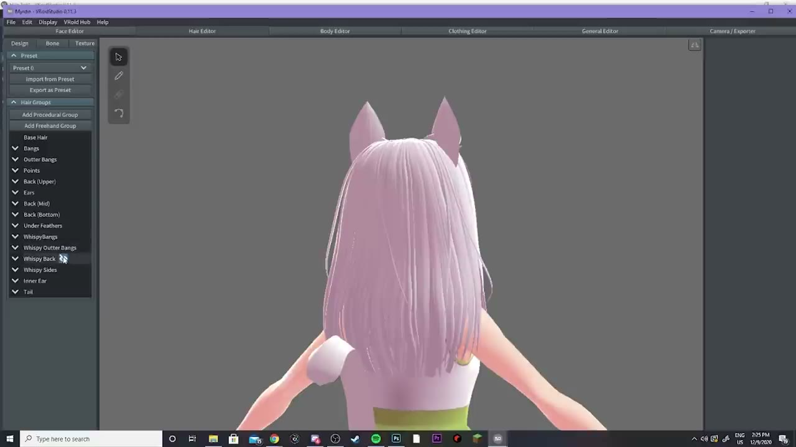
后半段打开自己的成品，只拆组，不再改滑杆。白发这套的列表是：Bangs、Outter Bangs、Points、Back (Upper)、Ears、Back (Mid)、Back (Bottom)、Under Feathers、WhispyBangs、Whispy Outter Bangs、Whispy Back、Whispy Sides、Inner Ear、Tail。后发至少拆成上、中、下三层，再加一层碎发。口播说碎发和飞起的发丝单独一组，比只加厚度更像真头发。尖耳在 Ears 里，不是配饰；里面还有 Inner Ear。画面上从背后能看见两只尖耳和披下来的长发。
银发和带角的那套
银发男生的窗口标题是 Starscope。组大多还叫 Freehand Group，其中一组的眼睛是关的。后颈是很多根分开的碎发兜着，口播说男生的头发要朝各个方向翘，藏掉最底下一层就会露出头皮，所以最里面要留一圈贴着脖子的束。
带角的那套窗口标题是 WaifuKing，Camera / Exporter 里开的是 Male Animation。头顶有一撮翘起的呆毛，两侧是两只紫色的角。口播说角和呆毛都是用头发做的，角上加了比较明显的描边，并且每只角单独一根骨骼，这样跑起来才会软。这一帧只停在站立预览，没有打开骨骼参数。